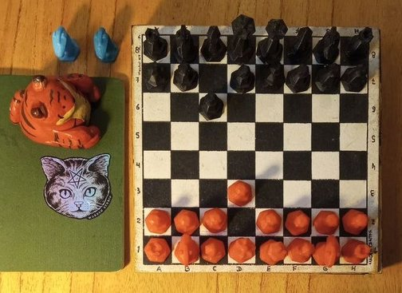
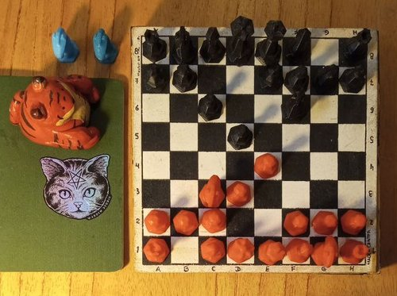

Defensa Caro-Kannn
Una defensa con las negras para 1.e4 c6.
Según wikipedia:
"Las ideas estratégicas de la Defensa Caro-Kann (ECO B10-B19) son claras. Se trata de apoyar el fuerte golpe d5, que ataca el centro blanco. Suele derivar en estructuras muy similares a la Defensa francesa, pero con la ventaja de que el alfil negro de casillas blancas ha salido de su cárcel —el principal problema de la Francesa. Sin embargo se retrasa el golpe c5, el golpe típico de la Francesa en la que se va a cambiar un peón del flanco por un peón central, lo que se considera una ventaja. Las blancas tratarán de evitar este golpe, pues si las negras lo hacen en buenas condiciones entrarán en una partida muy favorable. Con un juego lógico las blancas son capaces de retrasar este golpe durante mucho tiempo, incluso hasta que ya no es peligroso. Es precisamente la preparación de este golpe lo que da a la defensa un carácter maniobrero."
